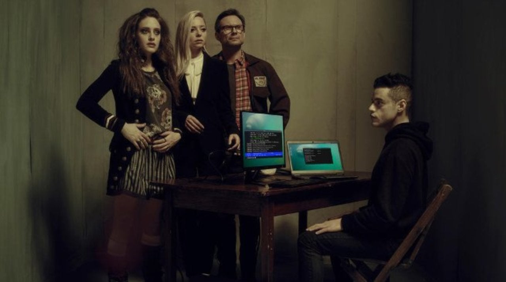

Merhaba ben Muhammed Soysal. Avcılar Firuzköy Çok Programlı Anadolu Lisesi 4.Sınıf öğrencisiyim, (Bilgi Teknolojileri / Veritabanı Programlama). Kendi projelerimi üretiyor, her gün kendimi geliştiriyorum ve farklı projeler yapmak için araştırmalarıma devam ediyorum. Yaptığım projelerin birkaçını Youtube, Github ve LinkedIn aglarından daha detaylı inceleyebilirsiniz.
Elliot, gündüzleri genç bir siber güvenlik mühendisi ve geceleri hackerlık yapan bir siber korsandır. Elliot, yer altı hacker grubunun (fsociety) onunla irtibata geçmek için şirketininin sistemine zarar vermesi üzerine büyük bir karmaşıklığın içine kendisini atmıştır.
